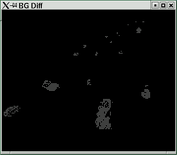
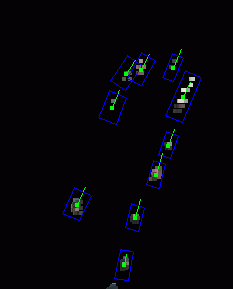
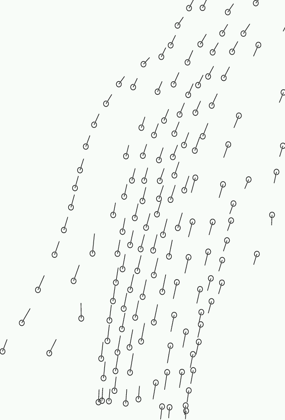

|
CogVis: Leeds Car/Blob Tracker |
The tracker works by segmenting the foreground from the background using a mixture of Gaussian background model. Individual objects are extracted by associating pixels with models of position, colour, velocity and size and re-estimating the models. Model position is propagated from frame to frame using a Kalman filter per model. A model of typical velocity over the groundplane may be used to improve Kalman filter initialisation (but is not necessary for the operaton of the tracker).
The tracker is described in the papers:
D. Magee, Tracking Multiple Vehicles using Foreground, Background and Motion Models, Image and Vision Computing, vol 22(2), pp143-155, 2004.
D.Magee, Tracking Multiple Vehicles Using Foreground, Background and Motion Models . Proc. ECCV Workshop on Statistical Methods in Video Processing , pp7-12, June 2002. An early version of which is available as a Research Report.
|  |  |
| Foreground segmentation | Tracking Results (Red dots are potential objects not yet confirmed) |
|  |  |
| Tracking Results projected to groundplane | Typical Velocity Model |